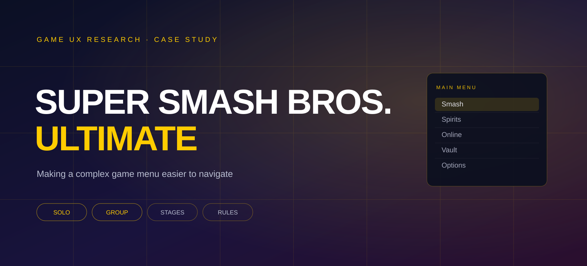
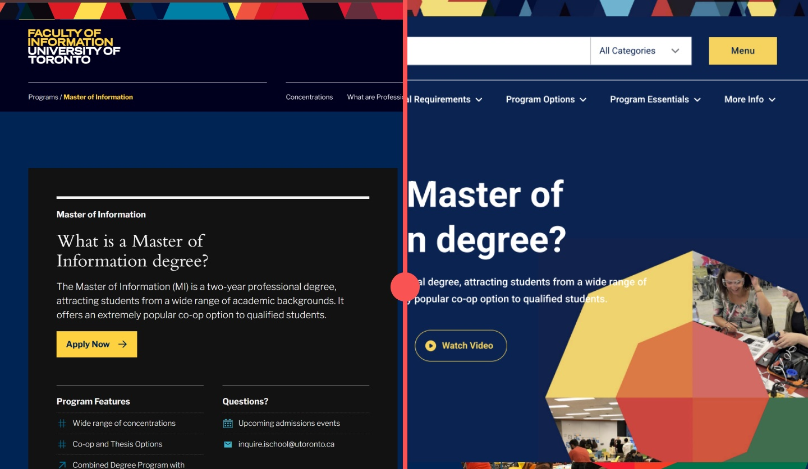

Game Research — Super Smash Bros. Ultimate
Making a complex game menu easier to navigate through user research and information architecture.

Making a complex game menu easier to navigate through user research and information architecture.

Super Smash Bros. Ultimate is a dense, menu-heavy fighting game with a deep layer of modes and options. Using heuristic evaluation and open card sorting, this project studies how players find what they need across its menus and reorganizes the information architecture to make core actions easier to discover.

04Rebuilt the U of T Master of Information site to remove invisible cognitive friction and screen-reader confusion — beyond AODA/WCAG compliance.
View case study → 06
06A dual student / teacher platform for everyday food choices — 1st place, Seneca Hackathon 2025.
View case study →